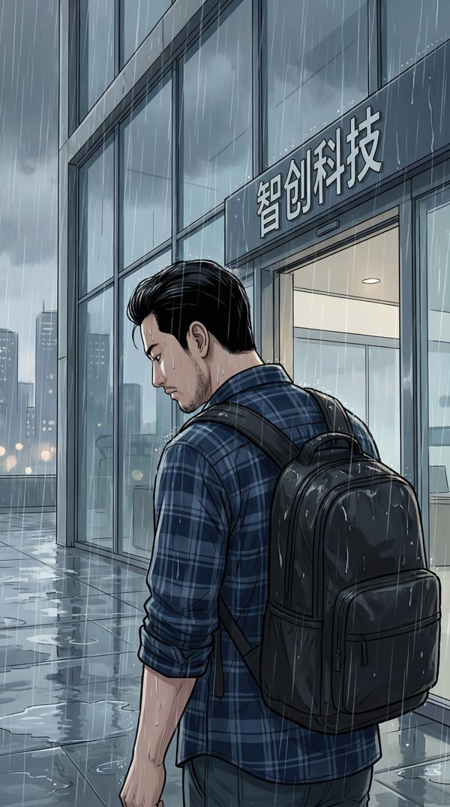
中景·侧后方跟拍 | 公司大楼外·雨天
三年。说走就走。AI替代了做AI的人，这算不算黑色幽默？
我攥着那张薄薄的离职证明走出智创科技的大门。雨水顺着脸颊往下淌，分不清是雨还是什么别的。
特写·侧脸 | 雨中街头
三十二岁，简历上最亮眼的一行——"被自己写的AI取代"。
嘴角扯了一下，不知道算不算笑。
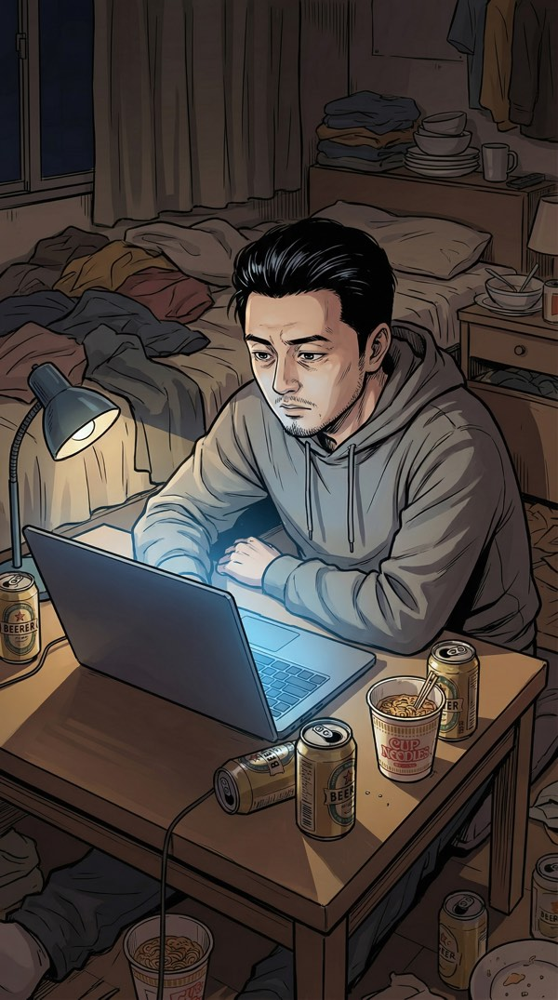
中景 | 出租屋·夜
回到十五平米的出租屋。桌上是昨天的泡面碗，冰箱里还剩两罐啤酒。
打开电脑，不是为了找工作。只是习惯了——程序员的条件反射。
特写 | 笔记本屏幕
余额：2847.33元
够付这个月房租吗？不够。够吃两周泡面吗？勉强。够重新开始吗？
……不敢想。
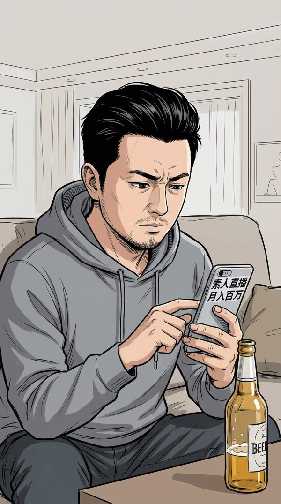
中景 | 沙发上
瘫在沙发上刷手机，手指无意识地滑动。一条推送跳了出来——
"素人直播月入百万的秘密"
呵，又是这种收割焦虑的标题党。不过……月入百万啊。我连月入两千八都快保不住了。
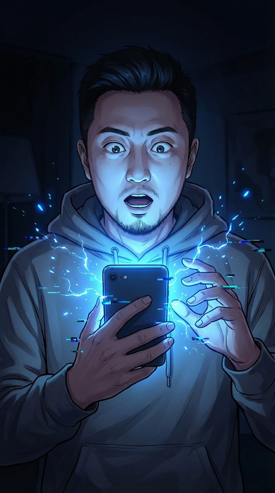
特写·正面偏侧 | 手机蓝光打脸
手机屏幕突然剧烈闪烁。蓝色数字流像瀑布一样从屏幕上倾泻而下——不，是从屏幕里涌出来。
什么……？！
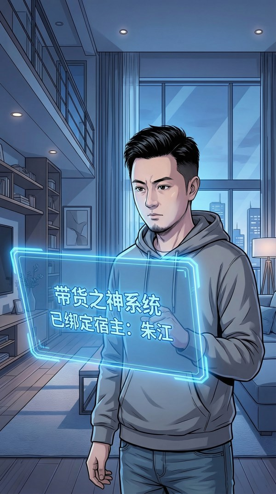
全景 | 出租屋内·系统全息界面
我猛地从沙发上弹起来。一块半透明的蓝色面板凭空出现在眼前，悬浮在空气中，上面的文字一行一行地跳出——
【带货之神系统】已绑定宿主：朱江
身份确认：前程序员 / 现无业游民
"检测到宿主处于人生低谷状态……恭喜，你被选中了。不是因为你优秀，是因为你够惨。"
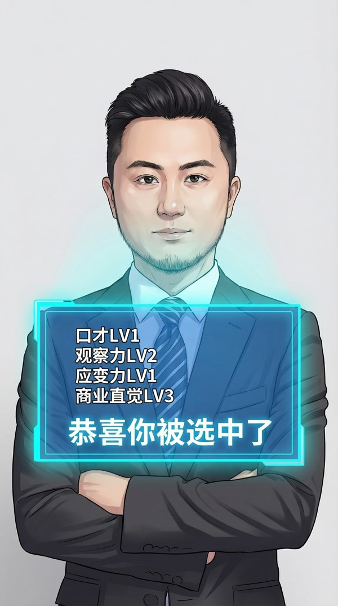
特写 | 系统属性面板
我使劲揉了揉眼睛。面板还在。
口才：LV1 ████░░░░░░
观察力：LV2 ████████░░
应变力：LV1 ████░░░░░░
商业直觉：LV3 ████████████░░
"口才LV1……宿主，系统见过的最低初始值。恭喜创造记录。"
系统发布第一个任务：立刻开启一场直播。
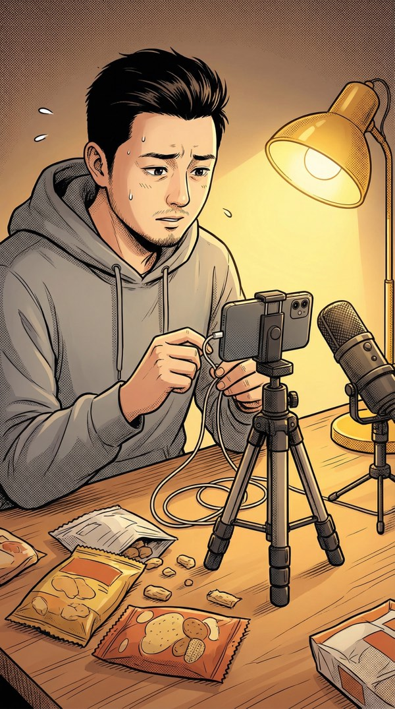
中景 | 出租屋·临时直播间
手机架在外卖筷子和书堆成的"三脚架"上。台灯当补光灯。桌上摆着从楼下超市老板那儿借来的六袋零食。
这大概是全国最寒酸的直播间了。
完成第一场直播（≥30分钟）
奖励：口才+1，解锁【观众情绪面板】
失败惩罚：商业直觉-1
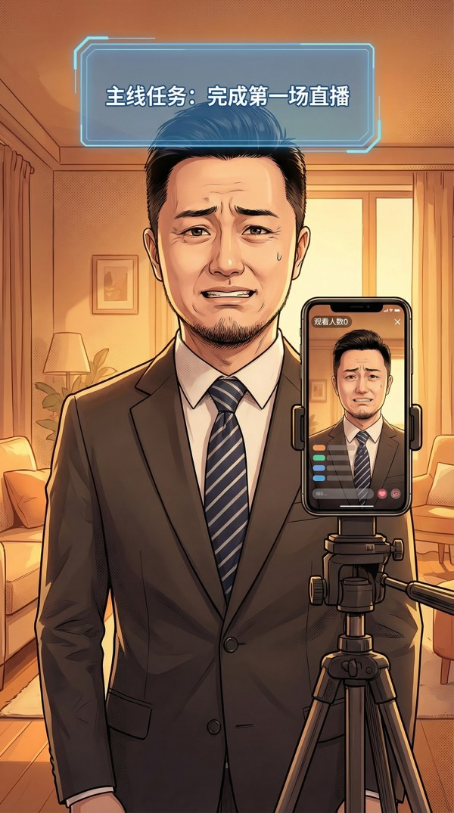
特写 | 手机直播画面
观看人数：0
对着手机自说自话的感觉，比面试还尴尬一百倍。
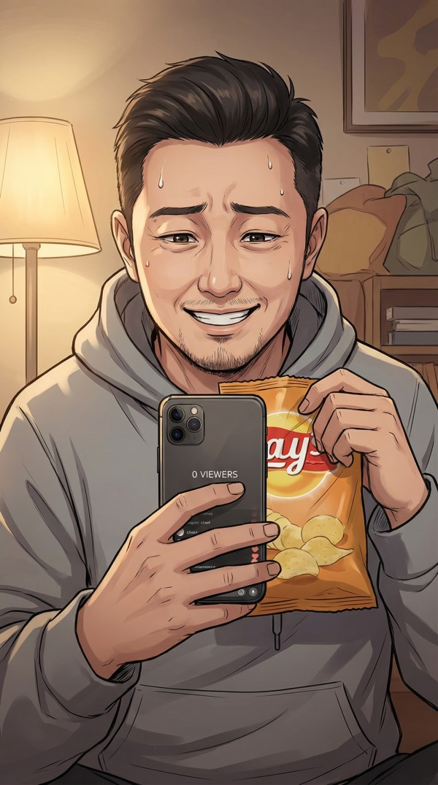
中景 | 直播中
"大家好……呃……我是朱江，今天给大家带来一些……零食……这个，这个很好吃的……"
完了，我在说什么？连我自己都想退出直播间。
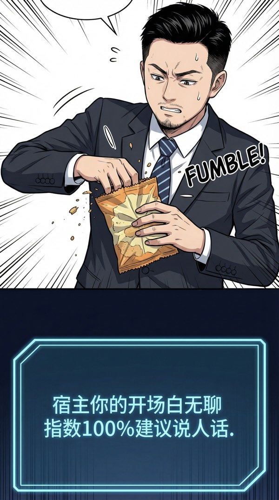
分屏构图 | 上：手忙脚乱 / 下：系统面板
⚠️ "宿主，你的开场白让系统检测到了14处语法错误和100%的无聊指数。"
"建议：说人话。"
（系统友好度：-50）
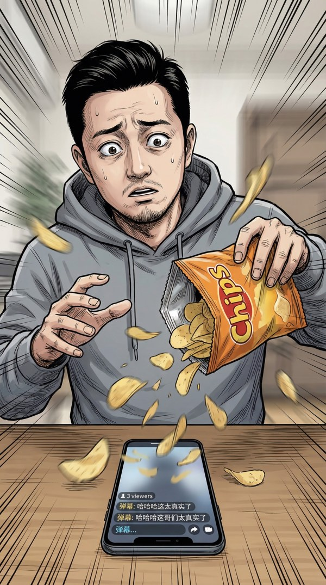
动态镜头 | 零食翻车现场
我一紧张，手一抖——
整袋薯片从桌上滑下去，碎片炸了一地。直播间终于来了3个观众，就看到了这一幕。
特写 | 手机屏幕弹幕
虽然只有3个人，但他们居然在笑……不是嘲笑，是那种"这哥们好真实"的笑。
好吧，我承认，我自己也笑了。
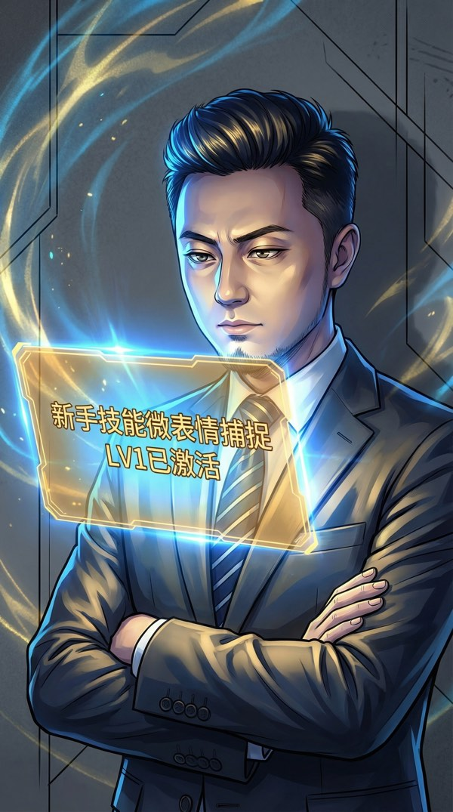
特写·仰视 | 技能激活画面
突然——眼前又弹出一块面板，这次是金色的。
【微表情捕捉 LV1】已临时激活
限时10分钟
效果：可感知观众文字背后的真实情绪
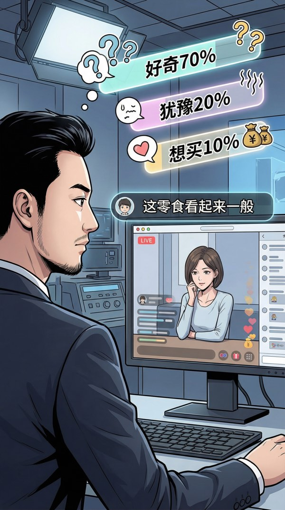
第一人称视角 | 弹幕情绪分析
再看弹幕，每条文字后面多出了彩色的标签——
"这零食看起来一般" → [好奇 70%] [犹豫 20%] [想买 10%]
等等……他嘴上说"一般"，心里其实好奇得很？这……这跟debug日志一个道理啊！表面报错，实际问题在别处！
中景 | 自信讲解状态
我不背话术了。直接拆配料表——
"你看这个配料表第三行，山梨酸钾，听着吓人对吧？其实就是防腐剂，国标允许的，安全。但是！你看旁边这个——"
用debug的思维拆解零食。三个观众变成了四十七个。
侧面中景 | 系统面板更新
📈 "意外……宿主的nerd属性居然有正向转化率。"
"系统重新评估中…… ████████████ 78%"
"嗯……也许你不是完全没救。也许。"
直播快结束时，一个观众突然问："你是不是被裁员了才来直播的？"
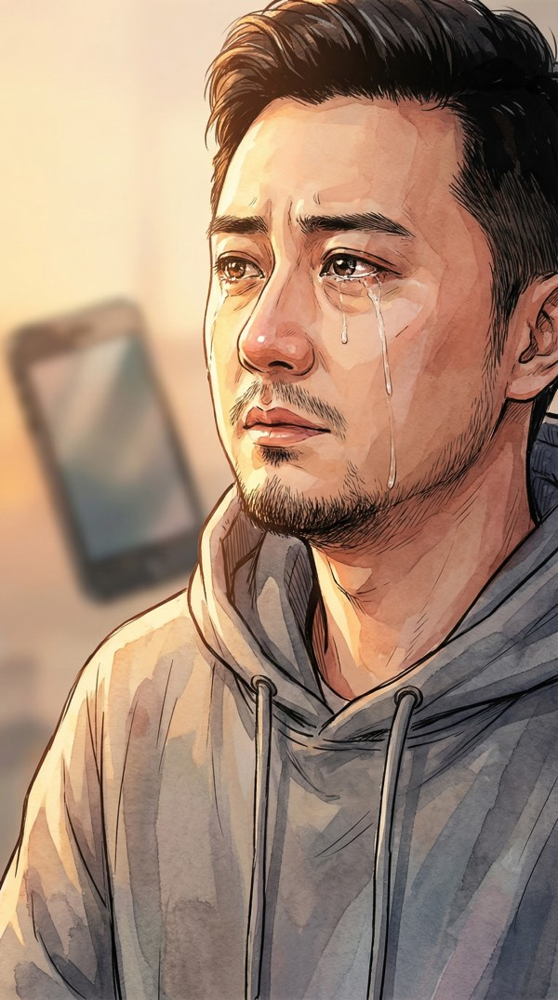
特写·侧脸 | 坦白的瞬间
"对。上周五被裁的。在那家公司干了三年，写了两万多行代码。最后被自己参与训练的AI模型替代了。"
"账户余额两千八百多。够吃两周泡面。直播……是我想到的唯一出路。"
说出口的那一刻，心里反而轻了。
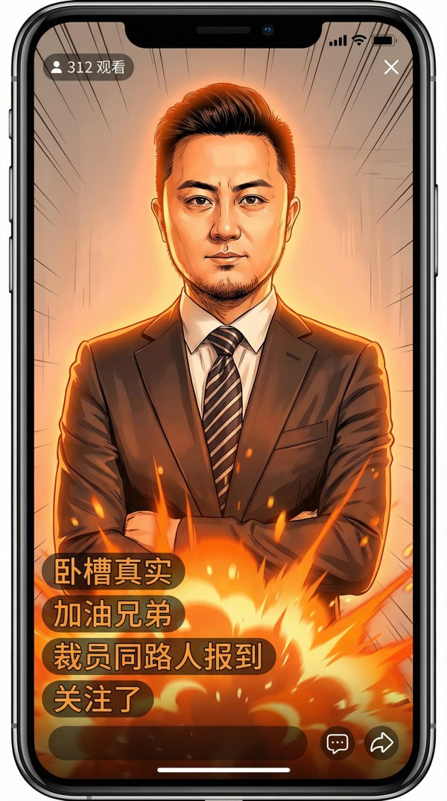
特写 | 手机屏幕·弹幕爆炸
弹幕瞬间炸了——
观众从47瞬间涨到312。
原来这个世界上，有这么多和我一样的人。
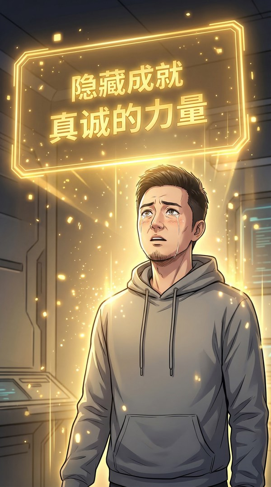
全景 | 金色成就弹窗
【真诚的力量】
触发条件：在直播中展示真实的自己
奖励：声望+50 | 解锁被动技能【信任光环】
"系统建议记住这一刻。"
"在未来的很多岔路口，你都会面临'真诚'还是'套路'的选择。"
"今天，你选了真诚。系统……记录在案。"
特写 | 直播结算面板
观看人数：312
最高同时在线：89
成交额：￥247.50（卖出23包零食）
——————
口才：LV1 → LV2 ↑
新技能解锁：【信任光环】
——————
"勉强及格。但你让系统看到了……一点点可能性。"
"只有一点点。别得意。"
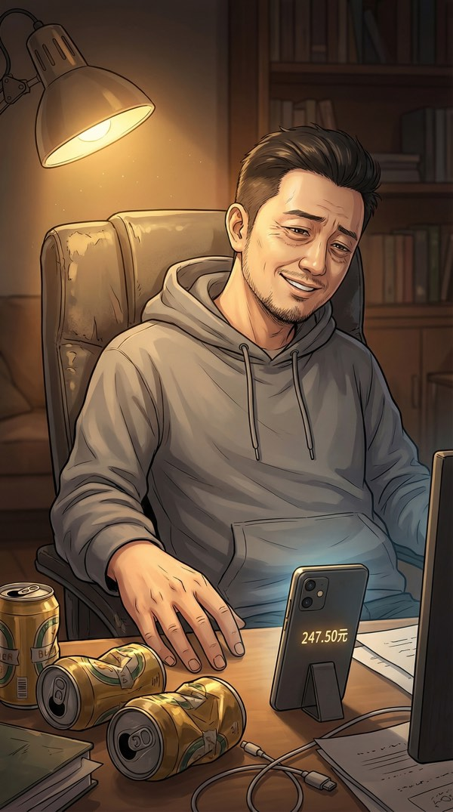
中景 | 直播结束后
关掉直播，我瘫在椅子里。
盯着手机上多出的247块5毛。不多。但这是我"重启人生"后赚到的第一笔钱。
两百四十七块五毛。够吃一周外卖了。
嘴角不自觉地翘了起来。
特写 | 手机私信通知
手机震动。一条私信——
"哥，你下次播什么时候？我还来。😊"
有人在等我。
这种感觉，比247块钱还值钱。
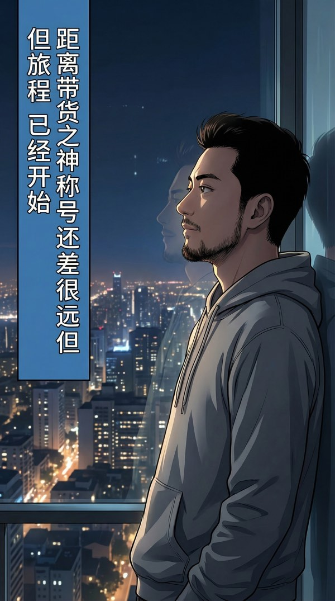
全景·背影 | 窗前·城市夜景
走到窗前，城市的灯火在眼前铺展开来。
身后，系统面板安静地亮着——
主线：完成第二场直播（目标观众≥500人）
支线：找到一件"有故事的商品"进行带货
⚠️ 警告：检测到同区域3名S级主播将在同时段开播
竞争压力：★★★☆☆
"隐藏线索：你楼下新搬来的邻居……系统建议你打个招呼。"
窗外的城市还在运转。几千万人各自为生活奔忙。
而我——一个刚被裁员、账户余额不到三千块的前程序员——手里多了一个来路不明的系统，和247块5毛钱的"战绩"。
旅程已经开始。
"宿主，距离【带货之神】称号还差……很远很远。"
"但旅程已经开始。"
系统已激活。首播已完成。
明天，500人的目标、S级主播的竞争、楼下神秘的新邻居……
故事才刚刚开始。
带货之神·系统上线 | EXP-940 | Trinity V3